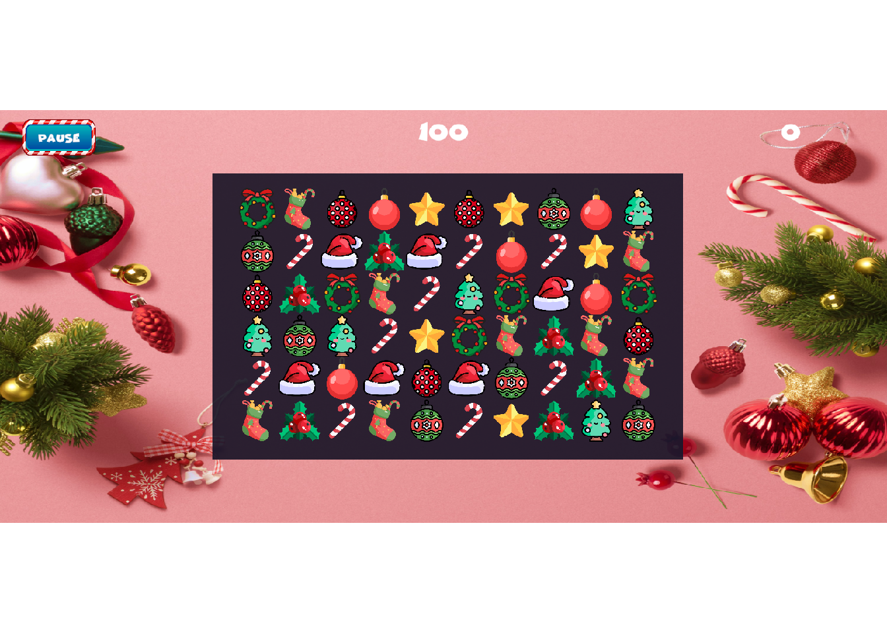
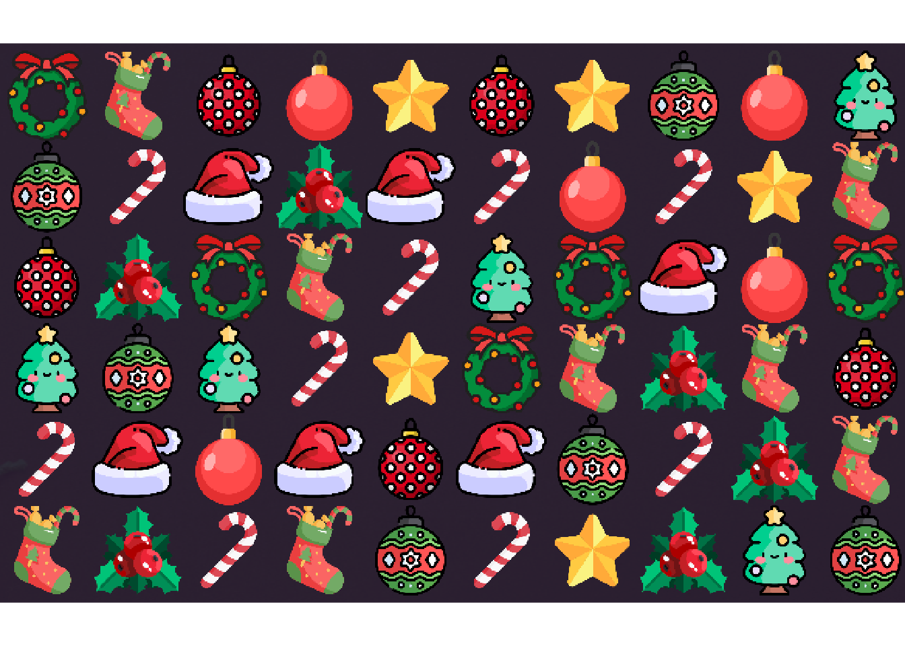
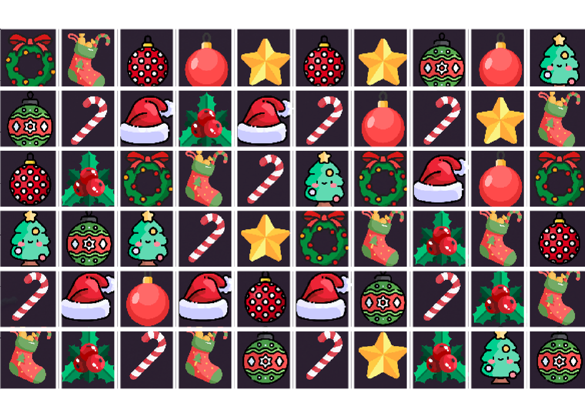

___
_.-| | /\_/\ (`\
{ | | (o.o )__ _) )
"-.|___| _.> ^ < ` /
.--'-`-. _((_ ` -- /_< \
.+|______|__.-||__)`-'(((/ (((/5 Computer Vision
In the previous chapters we have abstracted the game and trained models on theoretical abstractions. While the Monte Carlo simulations we conducted showed encouraging results, we have still not provided evidence that Gatai would be able to play this game in the real world. In order for us to interact with the real-world game console we either need to obtain the game’s source code and interact through the Unity platform, or else interact through its graphical user interface (GUI).
5.1 Interacting with the GUI
As we did not have access to the source code, we were left with the latter option: interacting with the GUI. This avenue presented us with some additional challenges, most of which are, incidentally, solvable by applying artificial intelligence.
There is, of course, the third possibility of manual interaction with the GUI, but this was never seriously considered.
Robot Play
In order to interact with the GUI in an automated fashion we needed to implement a robot capable of controlling a web-browser. This robot would in turn be governed by Gatai. The robot is required to start and load the video-game from its base URL. In order for Gatai to evaluate the board on the computer screen, the robot needs to take and return a screenshot to be evaluated by Gatai. This evaluation will return suggested move, communicated back to the robot, and made on the actual game-board. Once the moves have been made and the board has been updated, a new screenshot is taken; and the process repeats itself until the game is over. Figure 5.1 shows an overview of the workflow hitherto described.
%%{init: {'theme': 'dark', "flowchart": { "curve": "straight"}}}%%
flowchart LR
A --> |start| B
A[GatAI] -->|moves| B[Robot]
B -->|load| C[Chrome]
B -->|play moves| C
C -->|screenshot| B
B -->|screenshot| A
Selenium is our go-to solution when browser automation is required. Given the prior implementation of Gatai, it made sense to interact with Selenium using the package available on CRAN (Harrison 2022).
5.2 Screenshot Evaluation
Opening a URL, taking, screenshot to Gatai, are all relatively trivial operations with the infrastructure provided by Harrison (2022). Making moves on the board is a little more cumbersome, but amounts to calculating the coordinates of the grid, and translating the moves returned by Gatai to these coordinates.
The real bottleneck in this workflow is the transition from a graphic format (in this case a png format) to a board matrix which Gatai can evaluate.
5.3 Analysis
We start with a screenshot from the play interface. This is the raw material returned from Selenium.

Board on Screen
The board area is a subset of this screen and we can crop it.

From this board we can calculate the tile centroids and create a grid.

We are now able to extract the individual tiles from the board on the computer screen.


Now that we have these tiles at our disposal, in binary format, our first inclination was to define a set of reference tiles and simply compare the tile in question with the reference one, on a byte by byte basis. The problem with this approach is that there exist minute differences between like tiles, probably due to imprecisions introduces when cropping, as well as screen-resolution issues etc. These discrepancies are big enough that a direct comparison is impossible, or at least impracticable.
5.4 Algorithm for Classification
Image classification can be done with a series of algorithms –support vector machines (SVM), convoluted neural networks (CNN), k-nearest neighbors etcetera. However, given the very restricted space, and the presumably very small within-class differences (they are in principle identical, differences are introduced by imperfections in the data-retrieval procedures), we decided that multinomial logistic regression would be the correct choice for this use case. This is conveniently implemented in the nnet Venables and Ripley (2002) package, available open source on the CRAN network.
5.5 Multinomial Logistic Regression
Multinominal Logistic Regression is a classification model, which fits the likelihood of membership in a specified set of classes to a vector of variables. For our purposes we will always use the classification with the highest likelihood as our hard prediction.
Training Data
In order to train the data I classified 254 tiles into the ten known classes. Each tile then ran through a color analysis which parsed the image file, reduced the colors-space to Red, Green and Blue and calculated mean and standard deviation of these primary colors, as well as for each quadrant of the tile. The latter procedure was included with the intention of including shape. All the operations mentioned in this paragraph were conducted using the open source magick (Ooms 2023) package.
Model Testing
The standard way to test a classification model is to hold out some percentage of the data (typically 20%) and then use that to test the model post-hoc, by using the model to predict the class of this subset and comparing the results. In this case, however, given the paucity of traning data, and the unusually restricted space within which we are operating I chose to use all the classified data and testing the model by predicting a sample of the unclassified tiles, on the assumption that a visual scan of the resulting data would be sufficient to asses the solidity of the model.
Code
my_tiles <- dir(image_path,full.names = TRUE)
# Filter for the unclassified tiles
my_tiles <- my_tiles[!my_tiles%in%my_data$image] Spot Check
To do a quick spot-check we can select a tile at random and review the prediction.
tile <- sample(my_tiles,1) # Get a random tile
image_read(tile) |> print(info=FALSE)
image_data <- color_analysis(tile)
p <- predict(GataiVision,image_data,type="prob")| Type | Probability |
|---|---|
| red | 0.99999112225723985059033793731941841543 |
| berries | 0.00000483932151900513408807925908039493 |
| wreath | 0.00000250990639197149458325267548652882 |
| hat | 0.00000093383879242709282040896170279387 |
| spotted | 0.00000043625972012212495253506618769768 |
| stocking | 0.00000011479610486495123883806421076492 |
| candy | 0.00000004324977876972456998086455424828 |
| tree | 0.00000000037045295545499253517161763724 |
| star | 0.00000000000000006226561609299316148730 |
| striped | 0.00000000000000000000000000000003927107 |
We see that Gatai is quite convinced of its classification of the tile in Figure 5.6, which is has never seen before.
Model Evaluation
We can now run the rest of the tiles through the model to see what happens. These correspond to tiles that Gatai has never seen before. In total we ran 526 unseen tiles through the model with perfect precision. I am repeating the five first classifications if each class below, for brevity, and to illustrate the alternative evaluation method. By grouping the tiles by classification it is easy for a human to scan and see if there is an odd one out.
Code
analysis <- color_analysis(my_tiles)
pred <- predict(GataiVision, newdata = analysis)
my_new_data <- data.frame(png = my_tiles, pred = pred) |>
arrange(pred)


/\_/\
( @.@ )
> ^ <
I see.We can now distinguish the tiles from one another and effectively automate the interaction with the live video-game.